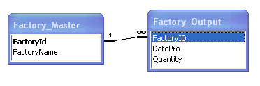

In this section, we will show you how to use FusionCharts XT and CFM to plot charts from data contained in a database. Here, we will do the following:
- Create a pie chart to show "Production by Factory" by initially using the Data String method first.
- Convert the chart to use the Data URL method.
We have used an MS SQL Database for this example. The Access version of this database is present in Download Package > Code > CFM > DB folder. You can, however, use any database with FusionCharts XT including MS Access, Oracle, MySQL, etc.
Before you go further with this page, we recommend you to please see the previous section, Basic Examples, as we start off from concepts explained in that page.
The code examples contained in this page are present in Download Package > Code > CFM > DBExample folder. The Access version of database is present in Download Package > Code > CFM > DB.
Before we code the CFM pages to retrieve data, let's quickly have a look at the database structure.

The database contains just two tables:
- Factory_Master: To store the name and id of each factory
- Factory_Output: To store the number of units produced by each factory for a given date.
For demonstration, we have fed some dummy data in the database. Let's now shift our attention to the CFM page that will interact with the database, fetch data and then render a chart.
The CFM page for Data String method example is named as BasicDBExample.cfm (in DBExample folder). It contains the following code:
<HTML>
<HEAD>
<TITLE>
FusionCharts XT - Database Example
</TITLE>
<SCRIPT LANGUAGE="Javascript" SRC="../../FusionCharts/FusionCharts.js"></SCRIPT>
</HEAD>
<cfinclude template="../Includes/FusionCharts.cfm">
<BODY>
<!---
In this example, we show how to connect FusionCharts to a database.
--->
<!--- Generate the chart element --->
<cfset strXML = "<chart caption='Factory Output report' subCaption='By Quantity' pieSliceDepth='30' showBorder='1' formatNumberScale='0' numberSuffix=' Units'>">
<!--- Iterate through each factory --->
<cfquery name="qry" datasource="dev">
select * from Factory_Master
</cfquery>
<cfloop query="qry">
<cfset factoryID = qry.FactoryId>
<cfset factoryName = qry.FactoryName>
<!--- Now get details for this factory --->
<cfquery name="qryDetails" datasource="dev">
select sum(Quantity) as TotOutput from Factory_Output where FactoryId=#factoryID#
</cfquery>
<!--- Generate <set label='..' value='..'/> --->
<cfset strXML = strXML & "<set label='#factoryName#' value='#qryDetails.totOutput#'/>">
</cfloop>
<!--- Finally, close <chart> element --->
<cfset strXML = strXML & "</chart>">
<!--- Create the chart - Pie 3D Chart with data from strXML --->
<cfoutput>#renderChart("../../FusionCharts/Pie3D.swf", "", strXML, "FactorySum", 600, 300, false, false)#</cfoutput>
</BODY>
</HTML>The following actions are taking place in this code:
- We first include FusionCharts.js JavaScript class and FusionCharts.cfm , to enable easy embedding of FusionCharts.
- We generate the XML data document by iterating through the recordset and store it in strXML variable.
- Finally, we render the chart using the renderChart() method and pass strXML as Data String.
When you now run the code, you will get an output as under:

Let's now convert this example to use the Data URL method. As previously explained, in the Data URL mode, you need two pages:
- Chart Container Page - The page which embeds the HTML code to render the chart. This page also tells the chart where to load the data from. We will name this page as Default.cfm.
- Data Provider Page - This page provides the XML data to the chart. We will name this page as PieData.cfm
The pages in this example are contained in Download Package > Code > CFM > DB_dataURL folder.
Default.cfm contains the following code to render the chart:
<HTML>
<HEAD>
<TITLE>
FusionCharts XT - Data URL and Database Example
</TITLE>
<SCRIPT LANGUAGE="Javascript" SRC="../../FusionCharts/FusionCharts.js"></SCRIPT>
</HEAD>
<cfinclude template="../Includes/FusionCharts.cfm">
<BODY>
<!---
In this example, we show how to connect FusionCharts to a database
using the Data URL method. In our other examples, we have used the Data String method
where the XML is generated in the same page as chart. Here, the XML data
for the chart will be generated in PieData.cfm.
To illustrate how to pass additional data as querystring to Data URL,
we have added an animate property, which will be passed to PieData.cfm.
PieData.cfm will handle this animate property and then generate the
XML accordingly.
--->
<!---
Set DataURL with animation property to 1
NOTE: It is necessary to encode the Data URL if you have added parameters to it
--->
<cfset strDataURL = URLEncodedFormat("PieData.cfm?animate=1")>
<!--- Create the chart - Pie 3D Chart with Data URL as strDataURL --->
<cfoutput>#renderChart("../../FusionCharts/Pie3D.swf", strDataURL, "", "FactorySum", 600, 300, false, false)#</cfoutput>
</BODY>
</HTML>In the above code, we are:
- Including FusionCharts.js JavaScript class and FusionCharts.cfm
- Creating the dataURL string and storing it in the strDataURL variable. We append a dummy property - animate to show how to pass parameters to dataURL. After building the dataURL, we encode it using the encodeDataURL function defined in FusionCharts.cfm.
- Finally, we render the chart using the renderChart() method and set dataURL as strDataURL.
PieData.cfm contains the following code to output XML Data:
<cfsilent>
<!---
This page generates the XML data for the Pie Chart contained in
Default.cfm.
--->
<!--- Default.cfm has passed us a property animate. We request that. --->
<cfparam name="URL.animate" default="1">
<cfset animateChart = URL.animate>
<!--- Generate the chart element --->
<cfset strXML = "<chart caption='Factory Output report' subCaption='By Quantity' pieSliceDepth='30' showBorder='1' formatNumberScale='0' numberSuffix=' Units' animation=' " & animateChart & "'>">
<!--- Iterate through each factory --->
<cfquery name="qry" datasource="dev">
select * from Factory_Master
</cfquery>
<cfloop query="qry">
<cfset factoryID = qry.FactoryId>
<cfset factoryName = qry.FactoryName>
<!--- Now get details for this factory --->
<cfquery name="qryDetails" datasource="dev">
select sum(Quantity) as TotOutput from Factory_Output where FactoryId=#factoryID#
</cfquery>
<!--- Generate <set label='..' value='..'/> --->
<cfset strXML = strXML & "<set label='#factoryName#' value='#qryDetails.totOutput#' />">
</cfloop>
<!--- Finally, close <chart> element --->
<cfset strXML = strXML & "</chart>">
<!---
Just write out the XML data
NOTE THAT THIS PAGE DOESN'T CONTAIN ANY HTML TAG, WHATSOEVER
--->
</cfsilent>
<cfoutput>#strXML#</cfoutput>
In the above page, we have done the following:
- Requested the animate property which has been passed to it (from dataURL)
- Generated the data and store it in strXML variable
- Finally, we coded this data to output stream without any HTML tags.
When you view this page, you will get the same output as before.